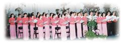
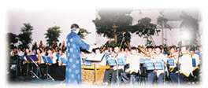
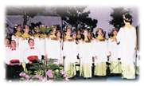
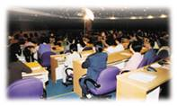

| Reportages spéciaux |
|
|

Grâce aux annonces parues dans les journaux et à la télévision, et grâce à de nombreuses affiches apposées dans les gares, sur les bus ou le long des autoroutes, les Formosans étaient au courant que Maître Suprême Ching Hai, qui avait été absente pendant un long moment, serait bientôt de retour et donnerait une conférence. Les Formosans répandaient aussi la nouvelle " Maître Ching Hai est de retour ! " Notre bureau d'information était continuellement assailli par des appels téléphoniques. La conférence était prévue pour 19h, mais les gens de tous les coins de Formose ont commencé à affluer très tôt dans la matinée. Le Stade L'Oeuf Géant à Taiwan (surnom du Stade Couvert de Taiwan) était plein à craquer.
Avant la conférence, les principaux journaux ont annoncé l'information concernant la conférence de Maître et ont signalé que les problèmes légaux du Centre de Hsihu à Miaoli avaient été formellement résolus. La station Eastern Television, plus connue sous le nom de ETTV, a couvert toute la conférence et l'a retransmise en direct à Formose et aux Etats Unis.
EETV transmettant en direct toute la conférence. | Les journalistes et véhicules des plus importants médias couvrant la conférence. |
Dix mille personnes se précipitent à la conférence de Maître Suprême Ching Hai au Stade Taoyuan County. |
L'Oeuf Géant à Taiwan est un immense stade couvert ayant la capacité d'accueillir vingt mille personnes et les pratiquants ont pris soin de décorer la salle jusqu'au moindre détail. La décoration terminée, l'estrade de conférence a été transformée en un paysage féerique rencontré seulement dans les mythes chinois, avec des cascades en arrière plan, des nuages éthériques s'élevant au-dessus de l'estrade, avec tout autour des orchidées, de l'herbe verte et des arbres. En plus, deux gigantesques écrans de Télévision ont été installés dans le hall de conférence, afin que le public puisse bien voir Maître.
La foule de tout âge a commencé à affluer dans le hall à seize heures. Les gens se promenaient pour admirer l'exposition des Vêtements Célestes, des Bijoux Célestes, des peintures et des publications de Maître ou s'asseyaient dans le stade pour écouter le spectacle musical chinois et la chorale. Vers dix neuf heures non seulement tous les sièges étaient occupés ainsi que plusieurs milliers de chaises supplémentaires mais également tous les passages du stade étaient remplis des gens. Dans les couloirs à l'extérieur, les gens regardaient la retransmission en direct à la télévision ou sur les énormes écrans préparés spécialement pour eux. Une autre foule était regroupée au comptoir destiné aux personnes souhaitant être initiées ou voulant apprendre la Méthode Pratique. L'intense désir de ces aspirants à la Vérité était facile à discerner.
 A dix neuf heures, des pratiquants initiés ont raconté leurs expériences, ensuite il y a eu un spectacle musical chinois et une chorale. Tout le monde attendait impatiemment Maître qui est apparue dans un habit blanc décoré de fleurs multicolores. Elle ressemblait à une splendide fleur d'été au milieu d'une foule fervente. Comme Elle ne s'était pas rendue à Formose depuis très longtemps, Elle a immédiatement senti l'intense émotion des gens à qui Elle avait manqué, et après être entrée dans le stade, Elle s'est déplacée le long des allées saluant tout le monde. Tout le public s'est levé, faisait des signes de la main à Maître et bien sûr essayant de son mieux pour La Lui serrer.
 Avant Sa conférence, Maître, les yeux clos, a invité le public à prier pour la paix à Formose, en Chine, et dans le reste du monde. Elle a remercié les très nombreux Bouddhas qui étaient venus La voir. Bien que tout le monde ne sache pas qu'il est un Bouddha, Elle voyait Bouddha en chacun. Elle a dit : " Nous sommes tous un. Nous sommes pareils. Chacun de nous est comme une goutte d'eau dans l'océan. Bien que chaque goutte soit unique et spéciale, c'est toujours l'océan. Si nous voulons savoir plus que simplement entendre que nous sommes un, ce n'est pas difficile, nous devons simplement l'approcher par l'autre côté. Si nous écoutons intérieurement notre Propre Nature, nous verrons immédiatement notre Nature de Dieu. Nous avons tous déjà lu dans les écritures bouddhistes, des choses qui parlent d'"écoute intérieure de notre Propre Nature", mais nous ne savons pas comment faire. Pourquoi avons-nous besoin d'"écouter intérieurement" et non de "regarder intérieurement", "toucher intérieurement" ou "ressentir intérieurement" ? C'est parce qu'il est réellement possible d'écouter notre Vrai Moi. Nous ne L'écoutons pas avec notre faculté auditive, nous l'écoutons avec notre coeur intérieur. Nous pouvons vraiment l'écouter. Pourquoi disons-nous "écouter" ? C'est parce qu'il y aura une musique céleste, les soutras bouddhistes, les enseignements célestes, et le courant du Son intérieur qui est aussi beau que la musique mais pour lequel aucun instrument de musique n'est nécessaire à sa production. "
" Cela ne nécessite aucun instrument de musique pour produire ce son qui est si beau et si mystique qu'il élève nos âmes dans le bien être et le bonheur du retour à notre Maison originelle, comme la Terre de Bouddha ou le ciel. C'est pourquoi le Bouddha a dit que nous devrions "écouter intérieurement notre Propre Nature". Notre Propre Nature n'est pas notre "coeur" ou une "qualité". Elle est libre et vraiment, vraiment, sage, grande et englobe tout l'univers. C'est notre Propre Nature. "
De Sa manière habituellement pleine d'humour Maître a expliqué dans un langage simple ce qu'était le Royaume Divin et Ses paroles étaient accueillies fréquemment par de forts applaudissements. La Bible dit : " Cherchez tout d'abord le Royaume de Dieu et tout le reste suivra ". Le Bouddha Sakyamuni a dit également que quand nous avons trouvé notre nature de Dieu, même notre vie en tant qu'humain est plus heureuse, réussie et plus abondante dans son aspect matériel. Nous ne cherchons pas la Nature de Dieu pour obtenir une vie plus confortable mais après avoir trouvé notre nature de Dieu nous nous sentirons plus à l'aise et plus heureux car en trouvant notre Nature de Dieu tout s'illumine. Tous nos talents oubliés, notre sagesse endormie et nos capacités enfermées se développeront avec notre Nature de Dieu. Nous devenons une autre personne, car dorénavant, nous ne serons plus humains ; en fait nous ne sommes pas humains à la base. C'est seulement après être entré dans ce corps que nous nous nommons humains. Alors qui étions-nous avant de pénétrer dans ce corps ? "
" Le Bouddha Sakyamuni a dit que lui et nous sommes égaux, et qu'Il a atteint le niveau de Bouddha et que nous l'atteindrons aussi dans le futur. Il a aussi dit que tous les êtres sensibles possèdent la Nature de Dieu comme Lui. Alors pourquoi n'en sommes-nous pas conscients ? Il se le demandait aussi. C'est parce que les illusions de ce monde sont vraiment attrayantes. C'est pourquoi nous ne pouvons absolument pas nous rappeler qui nous sommes, nous oublions tout à propos de notre maison au ciel et nous oublions ce qui concerne le Pays de Bouddha. Cependant, c'est aussi très simple si nous choisissons de nous en souvenir. C'est aussi simple que de retourner notre main. C'est simple et en même temps ce n'est pas simple. Ce n'est pas simple car nous sommes habitués à regarder dehors, alors il est difficile pour nous de croire que nous sommes Dieu. Nous avons peut-être entendu parler de Dieu, du pays de Bouddha, et que le Bouddha est dans le coeur ou que Dieu est à l'intérieur de nous. Cependant entendre est une chose, mais le jour d'après nous sommes toujours occupés à vivre la vie d'un être humain. Quand nous mourons sans guide pour nous mener, nous ne savons pas où aller, et notre âme sera prise d'angoisse. "
" Si chacun d'entre nous avait trouvé le Royaume divin, ce monde serait devenu le nirvana depuis longtemps. Les doctrines Zen disent qu'une mèche de cheveux seulement sépare le Ciel et la Terre. C'est réellement comme cela. A l'origine nous venons du ciel, donc nous n'avons qu'à tourner à nouveau notre attention et écouter à l'intérieur notre Propre Nature afin de trouver le paradis. "
Au milieu de Sa conférence, Maître a dit que ceux qui voulaient apprendre la Méthode Guan Yin pouvaient aller à l'extérieur pour s'inscrire. Alors, il y a eu beaucoup de mouvements dans les allées et beaucoup de gens se sont dirigés vers le bureau d'inscription. Plus de mille personnes ont reçu l'initiation ou appris la Méthode Pratique. Pendant plusieurs jours après la conférence de Maître, les lignes directes de la tournée Océan d'Amour ont reçu continuellement des appels de tous les coins de Formose. Les personnes qui appelaient exprimaient leur désir d'en savoir plus sur les enseignements de Maître et la Méthode Guan Yin. Certains ont demandé sincèrement l'initiation ou d'apprendre la Méthode Pratique car ils avaient manqué leur chance le jour de la conférence à cause d'autres engagements.
Maître Suprême Ching Hai, participant à un séminaire, accueillie par l'Académie Sinica. |
 L'Académie Sinica est une organisation reconnue dans le monde, impliquée dans la recherche académique. Les organisateurs du séminaire étaient des membres du Projet de Recherche dans le Sud-Est Asiatique qui faisait partie de l'Académie Sinica, l'Institut Religieux de Taiwan, la Compagnie Centrale de Radiodiffusion de Formose, le Groupe de Recherche des Chinois d'Outre Mer de la Faculté de Recherche en Histoire Contemporaine qui faisait partie de l'Académie Sinica, et l'association Chinoise Interdisciplinaire. Les participants au séminaire comprenaient des professeurs des universités de Formose, des chercheurs et des membres associés de l'Académie Sinica, des professionnels des médias, d'autres élites dans divers domaines.
Au séminaire, les activités caritatives et les enseignements de Maître dans les pays d'Asie comme Formose, la Malaisie, l'Indonésie, la Thaïlande, Singapour, les Philippines, Au Lac, le Cambodge, le Bangladesh, le Pakistan, le Sri Lanka, Hong Kong ont été présentés. Un imprimé concernant les affaires matérielles a été également distribué pour référence. Les questions variées posées par les savants, journalistes, et invités présents en contrepoint avec la sagesse de Maître et l'humour des réponses ont amené une discussion vive et brillante. (Tout le contenu du séminaire peut être trouvé dans une colonne spéciale, "Echange Spirituel et Intellectuel", dans ce numéro.)
Après le séminaire, les hôtes, suivant une pratique qui leur est courante, ont donné des honoraires à Maître qui a été très touchée par leur sincérité. C'était la première fois en dix ans qu'Elle était payée pour un discours. Maître leur a rendu leur argent immédiatement, comme cadeau pour les aider à payer les dépenses du séminaire. Durant deux heures, le séminaire était chaleureux et intéressant, et particulièrement plein de sens aux yeux de la recherche académique en Asie.

Tous les principaux journaux à Formose ont éminemment raconté les nouvelles concernant la conférence de Maître au Stade Taoyuan County, aussi bien que Son séminaire à l'Académie Sinica. |
|
|